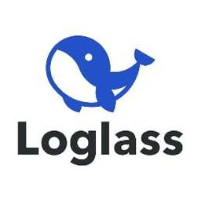
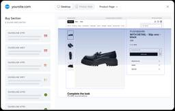

ブログ一覧（更新順）

Latent.Space https://www.latent.space
The AI Engineer newsletter + Top technical AI podcast. How leading labs build Agents, Models, Infra, & AI for Science. See https://latent.space/about for highlights from Greg Brockman, Andrej Karpathy...
42分前

DevelopersIO https://dev.classmethod.jp
DevelopersIOは、AWS、クラウド、生成AI、データ分析、アプリ開発などの技術情報から、DXやイベントレポート、SaaSやPython、Google Cloudなど多彩なトピックを紹介するクラスメソッドのオウンドメディアです。
2時間前

PYMNTS | https://www.pymnts.com/
The latest global news and analysis in payments, retail, fintech, financial services and the digital economy.
8時間前

橋本商会 - Cosense https://scrapbox.io/shokai
shokai / 階層整理型WiKiはスケールしない / 発表資料 / Scrapboxをグループでどう使っていくか？ / ServiceWorkerとCacheによるSPAの高速化、オフラインモード / 文芸的データベース - 文書の作成とそのデータベース化を同時に行なう手法 / PDEConf2026 / 熟練者と同等のCosense読み書きを実現するハーネスとAgent Skill / To
9時間前

BASEプロダクトチームブログ https://devblog.thebase.in/
ネットショップ作成サービス「BASE ( https://thebase.in )」、ショッピングアプリ「BASE ( https://thebase.in/sp )」のプロダクトチームによるブログです。
14時間前
MarkeZine:新着一覧 https://markezine.jp/
翔泳社が運営するマーケター向け専門メディア。MarkeZineはデジタルを中心とした広告・マーケティングに関する情報を多角的な視点で毎日提供します。
14時間前
Digital Commerce 360 https://www.digitalcommerce360.com/
Digital Commerce 360 is a global leader in ecommerce research and media, with over 20 years of experience in reporting and analysis.
18時間前

Radar https://www.oreilly.com/radar
Now, next, and beyond: Tracking need-to-know trends at the intersection of business and technology
1日前
Practical Ecommerce https://www.practicalecommerce.com/
Discover expert insights and tactics for online merchants worldwide — ecommerce marketing, AI, marketplaces, SEO, tools, payments, analytics, shipping, more.
1日前

ECのミカタ https://ecnomikata.com
ネットショップ運営を支援するビジネスポータル「ECのミカタ」。手間をかけずに、貴社ネット通販事業の収益性・業務効率性を高めるヒントを手に入れることが出来ます。
1日前
Sansan Tech Blog https://buildersbox.corp-sansan.com/
Sansanのものづくりを支えるメンバーの技術やデザイン、プロダクトマネジメントの情報を発信
1日前


Cybozu Inside Out | サイボウズエンジニアのブログ https://blog.cybozu.io/
サイボウズ株式会社、サイボウズ・ラボ株式会社のエンジニアが提供する技術ブログです。製品やサービスの開発、運用で得た技術情報やエンジニアの活動、採用情報などをお届けします。
2日前

Ecommerce News https://ecommercenews.eu/
Ecommerce News is a daily blog featuring news about the ecommerce industry in Europe. We write about cross-border, payments, omnichannel and much more!
2日前

Publickey https://www.publickey1.jp/
Enterprise ITに軸足を置き、新たにIT業界を変えつつあるクラウドコンピューティングやHTML5など最新の話題を、ブロガー独自の分析を交え、充実した記事で紹介するブログです。毎日更新しています。
2日前

Google DeepMind News https://deepmind.google/blog/
Discover our latest AI breakthroughs, projects, and updates.
2日前

Hugging Face - Blog https://huggingface.co/blog
We’re on a journey to advance and democratize artificial intelligence through open source and open science.
2日前
E-Commerce Times https://www.ecommercetimes.com?rss=1
Everything you need to know about doing business on the Internet. Coverage includes tech business topics, including e-commerce, social media, mobile commerce, tech business trends and deals, enterpris...
2日前

株式会社ログラス テックブログのフィード https://zenn.dev/p/loglass
株式会社ログラスは「良い景気を作ろう。」をミッションに、企業経営を推進する次世代型経営管理クラウド「Loglass 経営管理」を開発し提供しています。
2日前

LINEヤフー Tech Blog (LY Corporation Tech Blog https://techblog.lycorp.co.jp
LINEヤフー株式会社のサービスを支える、技術・開発文化を発信しています。
3日前
NTT docomo Business Engineers' Blog https://engineers.ntt.com/
NTTドコモビジネス（旧NTT Com）のエンジニアによるブログです。
4日前

Baymard Institute https://baymard.com
Solve real ecommerce UX challenges with 200,000+ hours of research. Get clear answers for every decision and improve conversion with confidence.
4日前


CSS-Tricks https://css-tricks.com
CSS-Tricks is where folks around the world come to learn about front-end code and everything related to it, including HTML, CSS, and yes, CSS.
5日前

Articles on Smashing Magazine — For Web Designers And Developers https://www.smashingmagazine.com/
Magazine on CSS, JavaScript, front-end, accessibility, UX and design. For developers, designers and front-end engineers.
5日前

Platinum Data Blog by BrainPad ブレインパッド https://blog.brainpad.co.jp/
株式会社ブレインパッドの社風、働き方、当社の多彩なプロフェッショナルを紹介するオウンドメディアです。
5日前

The WooCommerce Blog https://woocommerce.com/blog/
Tips, tricks, and ecommerce inspiration from WooCommerce experts.
8日前
hang-up https://note.com/git_yamazaki
組込みエンジニアです。 海外向け産業機械のHMIをQt/C++で作っています。 仕事で試したツールやAIの使い勝手を、うまくいかなかったところまで含めて記録します。技術のこと、読んだもの、日々の観察なども発信します。
8日前
Ahead of AI https://magazine.sebastianraschka.com
Ahead of AI focuses on machine learning and AI research and is read by more than 200,000 researchers and practitioners who want to stay ahead in a rapidly evolving field. Click to read Ahead of AI, by...
14日前

Stripe Blog https://stripe.com/blog
Follow the Stripe blog to learn about new product features, the latest in technology, payment solutions, and business initiatives.
17日前
Josh Comeau's blog https://www.joshwcomeau.com/
Friendly articles and tutorials for front-end web developers. ❤️
2ヶ月前


TooMeの記事 - Qiita https://qiita.com
Qiitaは、エンジニアに関する知識を記録・共有するためのサービスです。 プログラミングに関するTips、ノウハウ、メモを簡単に記録 & 公開することができます。
4ヶ月前
Akiraさんのフィード https://zenn.dev/akira_cloudjob
SQL Serverで構築したDWH・予算管理システムをGCPへ移行中。 20年のブランクを経て、Claude Codeでモダン開発に復帰。 上場企業の経営管理部門で、Python / BigQuery / Next.js を実務投入しながら検証記録を発信中。
6ヶ月前
WWW WATCH https://hyper-text.org/
Web コンテンツのデザイン、ユーザビリティやアクセシビリティ、HTML、XML、CSS、JavaScript など Web 関連技術の話題、新しい Web サービスや Web コンテンツの話題をはじめとしたインターネット上での最新トピックスなどを中心に取り上げる Blog
3年前